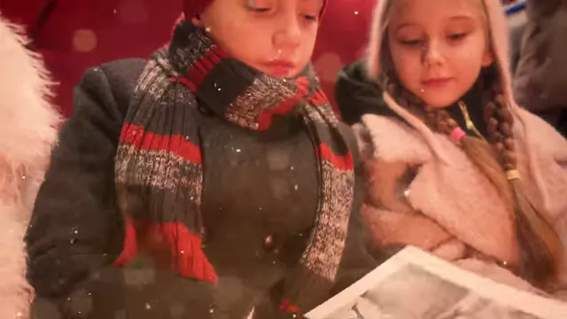
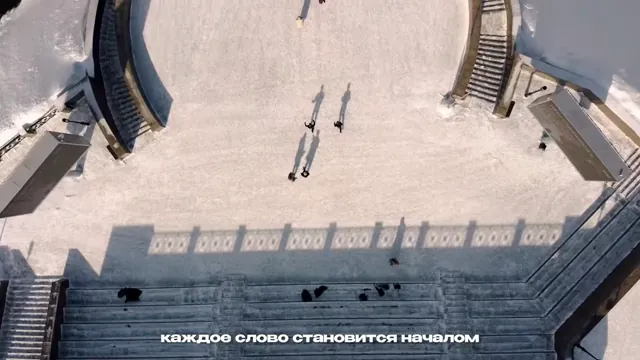
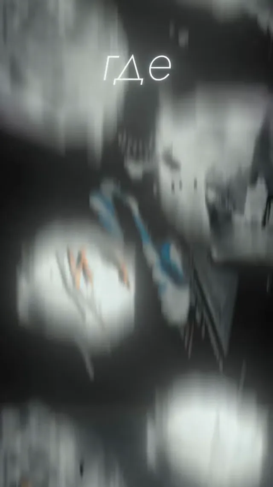
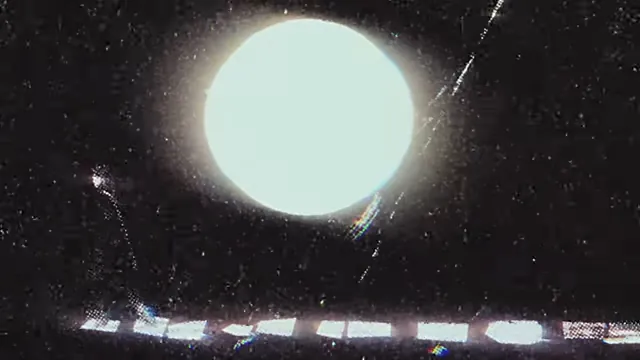

.webp)

Музыкальный клип
Полный клип: идея, раскадровка, смена до 6 часов, монтаж под трек и цвет.
от 28 950 ₽01CLIPS / ТОМСК / СЕВЕРСК
Музыкальные клипы, сниппеты, лирик-видео и концертное видео: от идеи и раскадровки до мастера под площадки.
Выберите формат клипа — соберём смету под ваш трек.
Полный клип: идея, раскадровка, смена до 6 часов, монтаж под трек и цвет.
от 28 950 ₽Короткий клип под фрагмент трека — для соцсетей и музыкальных площадок.
от 14 475 ₽Текст и настроение трека, собранные в картинку: типографика, титры, цвет.
от 15 975 ₽Выступление с энергией зала, звуком с площадки и монтажом в такт.
от 13 500 ₽9:16-версия клипа под Reels и Shorts: тот же материал, новая упаковка.
от 6 000 ₽Город, природа, студия или платная площадка — подберем под идею клипа.
от 2 000 ₽Клип живет ритмом: если монтаж не попадает в бит — это видеоряд, а не клип. Мы начинаем с музыки: слушаем трек, считаем такты, строим раскадровку и только потом ставим свет. ТЕТТА — продакшн полного цикла.
Разбираем трек и референсы, находим ход, который не развалится на второй минуте.
Считаем такты, метчим кадры под бит, оставляем запас на монтажные подхваты.
Свет, оптика и цветокор под настроение трека — без «как получилось».
YouTube, VK, Reels: горизонтальная и вертикальная версии, обложка-превью.
От трека до мастера — четыре шага. Смету считаем до старта, мастер отдаем под площадки.
Шаг 01 LIVE

[REC]REFСлушаем трек, собираем референсы, фиксируем смету до старта.
Шаг 02

TRACKBEATПлан по тактам и локациям: что, где и во сколько снимаем.
Шаг 03

4KSETСвет, камера, дубли — Томск, Северск или выезд.
Шаг 04

EDITCOLORСборка под бит, цвет, звук и мастер под площадки.
Сниппеты, mood-фильмы и событийные ролики с клиповой подачей. Открывайте фрагмент и смотрите, как темп, звук и постпродакшн работают на трек.
Выберите формат и уточните объем. Калькулятор покажет ориентир: финальная смета зависит от идеи, локаций и сложности продакшна.
Съемка клипа — от 4 500 ₽ за час смены, от 3 часов скидка 15%. Монтаж — от 1 500 ₽ за минуту, на объеме до −25%. Полный музыкальный клип — от 28 950 ₽, сниппет — от 14 475 ₽, лирик-видео — от 15 975 ₽. Точную смету фиксируем после трека и брифа.
Сниппет — от 14 475 ₽, полноценный клип — от 28 950 ₽, лирик-видео — от 15 975 ₽. Итог зависит от числа локаций, хронометража и постпродакшна. Смету фиксируем до старта.
Лучше да: клип строится от музыки — темп, драматургия и монтаж считаются от трека. Но можно начать с минуса или черновой записи: финальный мастер пересоберем под релизную версию.
Работаем в обе стороны. Приносите свою идею — соберем под нее раскадровку. Или предложим свои варианты после прослушивания трека и разбора референсов.
Базовый клип — до 6 часов, сниппет — до 3 часов. Многосменные клипы, выезды и сложные локации считаем отдельно после брифа.
Город, природа, студия или платная локация — от 2 000 ₽. Подскажем площадки в Томске и Северске под задачу и бюджет, включая крытые варианты на случай дождя.
Сниппет — 5–7 рабочих дней после смены. Полный клип с цветом и графикой — 10–14 дней. Срочный порядок возможен за +30%, если есть окно в расписании.
Да. Вертикальная 9:16-версия клипа под Reels и Shorts — от 6 000 ₽, с субтитрами и акцентами. Часто её имеет смысл заказывать сразу со съемкой — материал уже будет.
Заказчику. После закрытия проекта передаем мастер-файл и исходники бесплатно. Клип можно публиковать и монетизировать без ограничений.
Есть трек, идея или просто ощущение, что клип нужен не для галочки. Пишите в удобный канал: быстро разберем формат, сроки и следующий шаг.
Telegram - самый быстрый способ прислать трек и вводные.
VK подойдет для первого касания, референсов и просмотра контекста.
Почта - для брифов, документов и спокойной переписки: hehpeppewhata@duck.com.


.webp)
.webp)
.webp)
.webp)
.webp)
.webp)